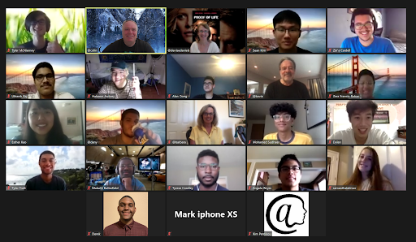
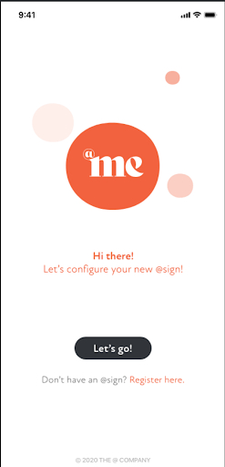

The @ Company Update - June 2020
I hope you are well and staying healthy.
Here is some fun news from us:
- Our seed funding round was approximately 10% oversubscribed! During this time of uncertainty, this response is amazing and we are very grateful for all the support Thank you all!
- Our registrar site continues to generate revenue even though the mobile applications that we’re planning are still in development.
- There are some great apps going into beta next month. I’ve seen a demo of the Buzz (contacts) app that Renascence is developing and I can’t wait to start using it.
Some of those great apps are being developed by our interns.
The interns have been fun, inspiring, and creative. On our very first The @ Company birthday, June 11th, all of the interns changed their Zoom background to a celebration background designed by Zara (one of our interns.)
Our Bermuda-based interns were featured in two articles: Bermuda Royal Gazette and Ber news thanks to a press release written by Esther, another one of our interns.
All of our interns are doing amazing work and we are so grateful to our investors for supporting this program! Here is a picture of the group:
Applications for the Ecosystem for Launch
The Buzz app development is progressing rapidly and MVP features are nearing completion. Development of the @me mobile application (aka the settings app) is essentially complete and we are working to complete the web version shortly. If you are interested in helping us test this ahead of submission to the app stores, please let us know.
|
App |
What it does |
Beta ETA |
GA ETA |
|
@me (mobile) |
Allows entering of public viewable data |
imminent |
October |
|
@me (web) |
Allows viewing of public viewable data on the web |
imminent |
October |
|
Contacts (buzz) |
Peer-to-peer contacts - the only contact info you ever have to update is your own! |
August |
October |
|
Influencer app |
Attractive, embeddable display of public data |
TBD |
TBD |
|
Julz vault |
Secure sharing of private data between executives and their admins |
TBD |
TBD |
|
LifeSite |
Lifesite.co - Data vault |
TBD |
TBD |
|
Dood app |
Fun demo app, peer-to-peer Dood voice |
TBD |
TBD |
|
File transfer |
Simple secure peer-to-peer file transfer between any device in any location |
TBD |
TBD |
The internship program will add some great new apps. The current list of applications that they are working on is:
- @Unite - A standby/standin network application for when disaster hits
- @chats - Peer to peer group chats
- @Onboarding - “you should always be ready to be hired”.
- @location - peer to peer, surveillance free location sharing.
- Compliance App - helping companies comply with privacy regulations.
- Stream joining - stream content over direct socket to socket p2p connections.
- @Productivity - social media as a productivity improver, not a time waster.
Please share any ideas for applications that you would like to see sooner rather than later.
For those interested in hearing about our amazing technical progress, please see the information below:
@ Core Protocol Codebase
This month, we focused on the server side codebase and implemented TCP/Socket caching and pooling mechanisms that speed up the protocol significantly.
We have also implemented several enhancements in the data storage module, one being the introduction of a time to live (TTL) on a record. This allows an update that will automatically be removed after a set amount of time. One of the development team members had a very new idea that we have not seen before, which was to have a time to birth (TTB): In other words, this would allow a record to appear after a set period of time. Both TTL and TTB have millisecond accuracy, and combined TTL and TTB allow a new set of use cases that we are only starting to fully imagine.
We’d like to add that the synchronization mechanism that we mentioned in our last update has now been implemented on the server side code.
@ Developer Software Development Kit (SDK)
With all this work on the server code, we are focused on bringing these functions to the client libraries and the SDK.
Based on the feedback from the developer interns, we have created a standalone full development environment that includes every component of the @ protocol but runs on the developers local machine. This includes a root database, @ primary server and 13 secondary servers. This allows developers to develop full solutions without any dependencies on internet connectivity. The environment can be spun up in a few seconds and rebuilt instantly to allow a stable baseline @ protocol environment to test against as well.
I hope you and your family stay well.